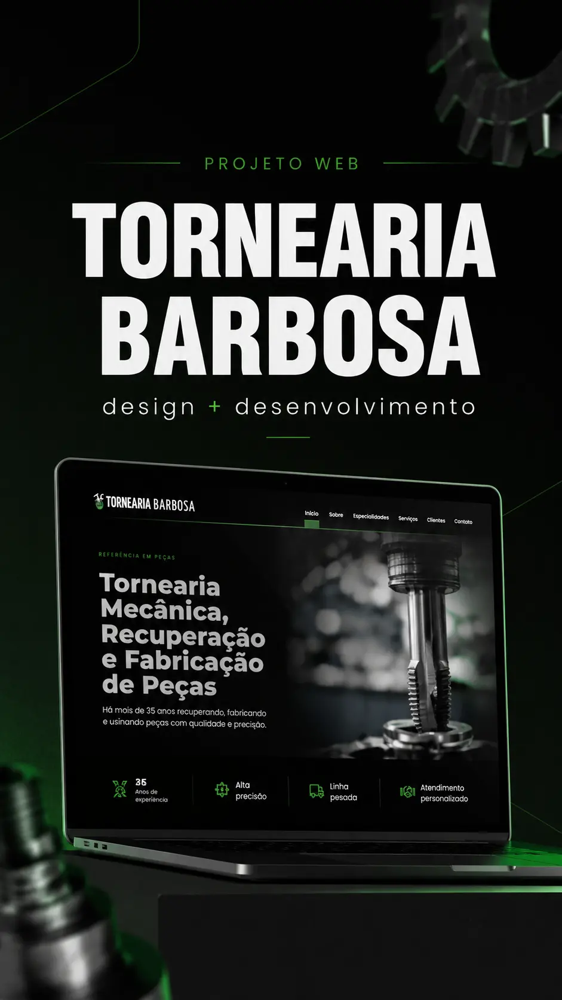

Representação conceitual
La Pote by Iza Lopes
Uma identidade delicada e expressiva para uma marca de açaí e doces.
Identidade em desenvolvimentoPortfólio multidisciplinar
Design, desenvolvimento, identidade visual e produtos digitais. Aqui compartilho projetos reais, conceitos e trabalhos em evolução, com o contexto e as decisões de cada criação.
Portfólio selecionado
Sistemas para simplificar a rotina de pequenos negócios.
Conhecer soluções ↗Soluções para aproximar negócios, produtos e pessoas.
Conhecer soluções ↗
Uma presença institucional desenvolvida para o setor industrial.
Ver estudo de caso ↗Uma identidade delicada e expressiva para uma marca de açaí e doces.
Identidade em desenvolvimentoUma central para organizar projetos, ideias e processos criativos.
Projeto de uso internoProcesso criativo
Entender o problema e o objetivo antes de propor uma solução.
Transformar estratégia em hierarquia, identidade e experiência.
Desenvolver, testar e evoluir com atenção aos detalhes.
Conhecer meu processo ↗Vamos conversar?
Vamos trocar ideias, construir conexões e explorar novas oportunidades.